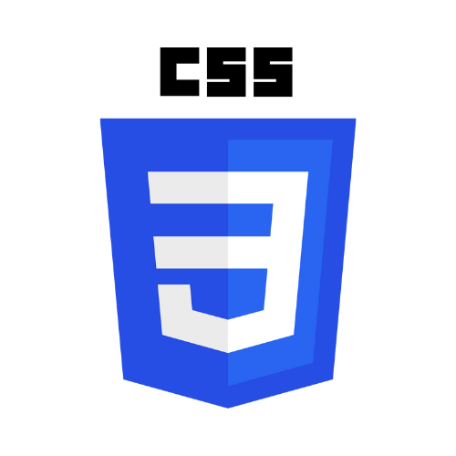

Minhas Habilidades e ferramentas

Sou um estudante de desenvolvimento de sistemas, atuando tanto no front-end quanto no back-end. Tenho experiência na criação de sistemas utilizando o framework Flask, com integração a bancos de dados como SQLite, PostgreSQL e TinyDB, implementando operações CRUD de forma clara e eficiente.
No front-end, utilizo HTML, CSS e Bootstrap para construir interfaces responsivas e bem estruturadas, incorporando JavaScript para tornar as páginas mais interativas. Antes de codificar, planejo o layout no Figma, garantindo um design funcional e alinhado com a proposta do projeto.
Busco unir boa organização de código, clareza visual e foco na experiência do usuário em cada aplicação desenvolvida.
O Vovô Conectado é um site educativo desenvolvido com HTML, CSS e Bootstrap, com o objetivo de auxiliar idosos a usarem aplicativos e recursos digitais do dia a dia, como WhatsApp, Google, Facebook e bancos. A interface é simples, acessível e ilustrada com tutoriais passo a passo, usando carrosséis e imagens explicativas.